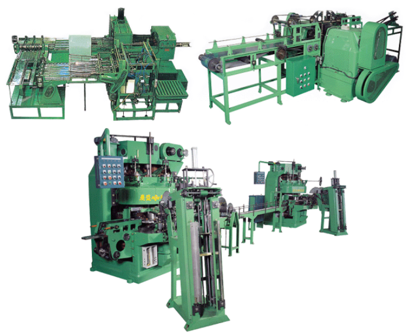
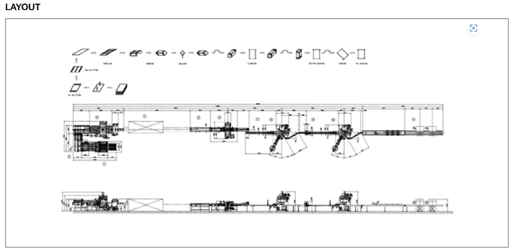

PRODUCT · 18L SQUARE CAN
18L 사각캔 바디 메이킹 라인
판재 슬리팅부터 성형·용접·플랜징·권체까지 18L 사각캔 몸통을 일관 생산하는 Body Making Line입니다.
← 18L SQUARE CAN
18L BODY MAKING LINELAYOUT
공정 흐름도·평면도·측면도 기준 설비 배치 및 치수 레이아웃입니다. 12개 스테이션으로 구성됩니다.

PROCESS FLOW
DETAIL VIEW